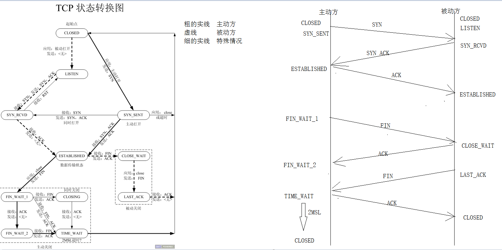

1 tcp状态转换图

2 MSL
报文最大生存时间
在linux下,2MSL大概是30S
3 为什么主动方调用close关闭,在最后一次挥手.发送完ACK之后还要等2MSL时间
因为我们网络中的数据包有可能丢失,假设发生最后一次ACK时,这个ACK 丢失,被动方没有收到ACK,就会等待一会之后在重发FIN,这个时候主动方就可以再次回ACK
4 半关闭:
半关闭: 主动方发送FIN请求,收到ACK.这个时候处于半关闭状态;
半关闭的特点: 主动方这个时候应用层还可以收数据,不可以发数据

#include <sys/socket.h>
int shutdown(int sockfd, int how);
sockfd: 需要关闭的socket的描述符
how: 允许为shutdown操作选择以下几种方式:
SHUT_RD(0)： 关闭sockfd上的读功能，此选项将不允许sockfd进行读操作。
该套接字不再接收数据，任何当前在套接字接受缓冲区的数据将被无声的丢弃掉。
SHUT_WR(1): 关闭sockfd的写功能，此选项将不允许sockfd进行写操作。进程不能在对此套接字发出写操作。
SHUT_RDWR(2): 关闭sockfd的读写功能。相当于调用shutdown两次：首先是以SHUT_RD,然后以SHUT_WR。
shutdown(fd,SHUT_RDWR );//不涉及文件描述符的计数
5 端口复用
端口重新(重复)使用
注意:如果一个系统中有多个相同的端口程序,只有一个程序的端口起作用,一般这个程序是最后使用了那个端口的程序
设置端口复用
socklen_t len = 1;
int setsockopt(lfd, SOL_SOCKET, SO_REUSEADDR, &len, sizeof(socklen_t));
6 心跳包
设置tcp选项 心跳
keepAlive = 1;
setsockopt(listenfd, SOL_SOCKET, SO_KEEPALIVE, (void*)&keepAlive, sizeof(keepAlive));
一般不使用这个: 一般人为自己去写.注意,心跳包,一定是最小粒度
乒乓包: 和心跳包基本一样,只是携带的数据比较多
7 高并发服务器
方式1: 阻塞等待 - 浪费资源
方式2: 非阻塞忙轮询 - 耗cpu
以上的2种方式都不完美,有缺点
方式3: 多路io转接技术(多路io复用)
对路io转接技术有3中方法可以实现
select
poll
epoll
8 文件描述符
内核中会有一张表,这张的数据结构是位图,位图中的某一位置1,代表这个这一位的下标(文件描述符)指向了打开的那个文件

8 select 函数
#include <sys/select.h>
int select(int nfds, fd_set *readfds, fd_set *writefds,
fd_set *exceptfds, struct timeval *timeout);
void FD_CLR(int fd, fd_set *set);//将文件描述符fd从集合set中删除
int FD_ISSET(int fd, fd_set *set);//判断文件描述符是否在set集合中
void FD_SET(int fd, fd_set *set);//将文件描述符fd添加到set集合中
void FD_ZERO(fd_set *set);//清空文件描述符集合
功能: 监听文件描述符的属性(可读,可写,异常)变化
参数: nfds 监听的最大文件描述符加1
fd_set *readfds:监听读属性变化的文件描述符集合(将需要监听读属性变化的文件描述符添加至readfds 集合)
fd_set *writefds,:监听写属性变化的文件描述符集合(将需要监听写属性变化的文件描述符添加至writefds 集合)
fd_set *exceptfds ,:监听异常属性变化的文件描述符集合(将需要监听异常属性变化的文件描述符添加至writefds 集合)
struct timeval *timeout: 监听的时长
struct timeval {
long tv_sec; /* seconds */
long tv_usec; /* microseconds */
};
struct timeval t;
t.tv_sec =1;
t.tv_usec =0;
如果写固定的值,那么就监听固定的时间
如果写NULL,永久等待(一般填这个)
如果写0,代表不等待
如果写0,代表不等待
返回值: 监听到文件描述符变化的个数

9 select 的优缺点
优点:
并发量大
跨平台 windows linux ....都支持
缺点
1 编写代码困难
2 select返回变化的文件描述符,需要人为遍历一遍
3 每次都要给一份监听的集合给到select,这个集合要从应用层拷贝带内存.每次这样拷贝,消耗资源
1 如果4-1023文件描述符需要监听,但是.5-1000这些文件描述符都关闭了,怎么解决
2 如果4-1023文件描述符需要监听 ,只有5,6,8有变化,怎解决?